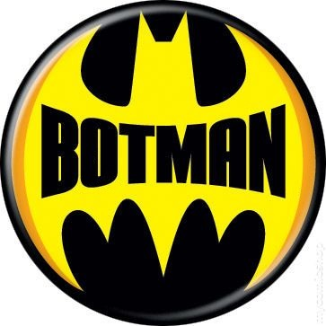

Projects

Botman Discord Bot
Botman is a Node.js bot connected to the Discord API in order to interact and execute a variety of commands in the text and voice chat rooms.
View Github Repository
Interject Documentation Website
This was created for the company as a strong base for users as a reference to answer specific questions as well as act as training courses to develop strong fundamentals in the product and it's features.
View Webpage